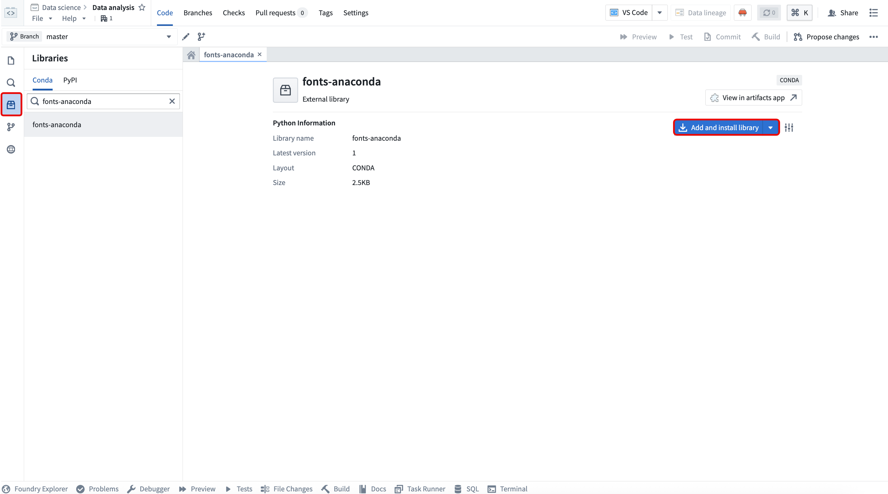
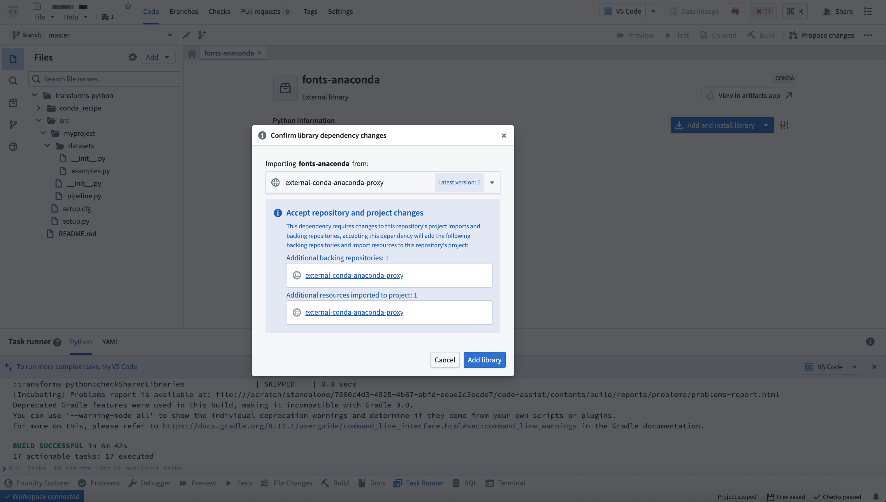
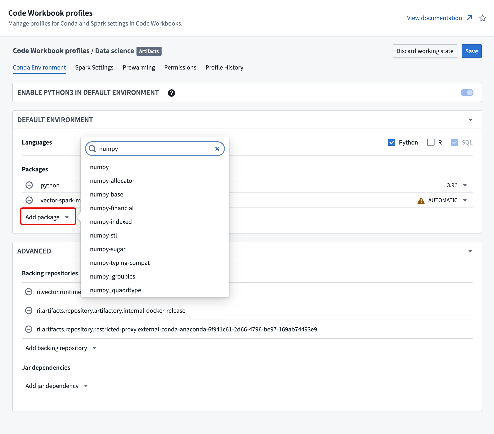

You can use Anaconda's comprehensive Conda packages directly through Code Repositories and Code Workbooks, enabling access to enterprise-grade data science capabilities that streamline workflows and accelerate analytics and AI development.
:::callout{theme="warning"} Anaconda access is generally available across Foundry enrollments with no license cost through June 29, 2027. After that date, workflows, builds, and pipelines using Anaconda require a separate customer-procured license. All use of Anaconda's core offerings in Foundry must comply with their Embedded End User License Agreement â. Palantir shares the following usage information with Anaconda:
Contact Palantir Support with any questions about the availability or licensing of Anaconda on your enrollment. :::
By accessing Conda packages in Code Repositories or Code Workbooks, you can:
In Code Repositories, Conda packages from Anaconda repositories are available in the Libraries side panel. Search for and select the package before choosing Add and install library.

Foundry automatically configures the necessary backing repository.

In Code Workbooks, navigate to the Conda environment tab in your workbook profile and select Add package to search for and add Anaconda packages.

Test the Conda environment within your workbook before saving profile changes to ensure dependencies resolve correctly. When you save changes to the Conda environment, Foundry prompts you to acknowledge that you have tested the configuration.